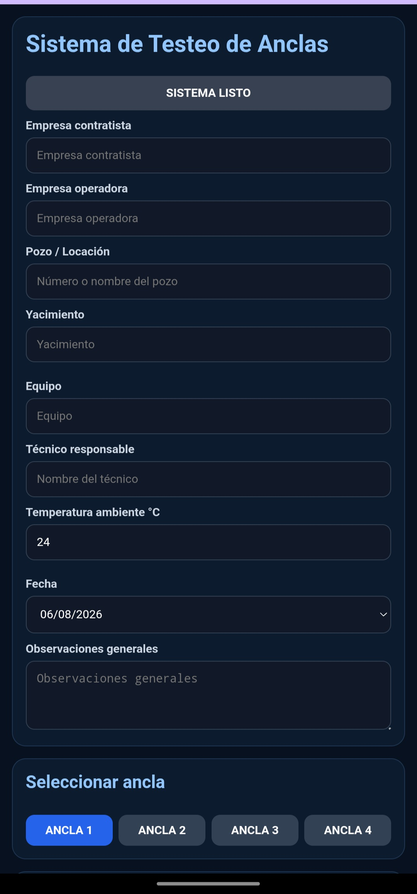

Desarrollo personalizado
Sistemas diseñados según las necesidades y procesos específicos de cada cliente.
Software • Automatización • Oil & Gas
Desarrollo aplicaciones, sistemas de gestión y soluciones de automatización para optimizar procesos industriales, mantenimiento y trabajos en campo.
Combino experiencia técnica en campo con programación para desarrollar herramientas simples, eficientes y adaptadas a cada empresa.
Sistemas diseñados según las necesidades y procesos específicos de cada cliente.
Conocimiento práctico de mantenimiento, operación, inspecciones y trabajos en Oil & Gas.
Aplicaciones para registrar datos, fotografías, pruebas, inspecciones e informes desde el celular.
Acompañamiento durante la implementación, capacitación y mejora continua del sistema.
Desarrollo herramientas para empresas, talleres, contratistas y equipos de trabajo.
Sistemas de gestión, bases de datos, control de clientes, trabajos, personal e inventarios.
Apps para inspecciones, mantenimiento, fotografías, formularios, reportes y operación en campo.
Integración de ESP32, Raspberry Pi, sensores, instrumentación y sistemas de monitoreo.
Sistemas para pruebas hidráulicas, testeo de anclas, inspecciones, certificaciones e informes técnicos.
Visualización de datos, gráficos, indicadores, alarmas, registros históricos y estadísticas.
Generación de certificados e informes PDF con datos, fotografías, gráficos y firmas.
Algunos sistemas y aplicaciones orientados a necesidades reales de empresas y trabajos industriales.

Oil & GasSistema para registrar empresa, pozo, carga, tiempo de prueba, temperatura ambiente y fotografías de las cuatro anclas.
Registro de carga, tiempo y temperatura, gráficos de ensayo, fotografías de placas y generación de informe final.
 Industria
Industria
Registro de presión, duración, temperatura y observaciones durante ensayos hidráulicos de cañerías y equipos.
Control y registro de presión, duración, temperatura, observaciones y certificados automáticos.
 Gestión
Gestión
Plataforma para administrar empresas, clientes, trabajos, documentos, personal y seguimiento de actividades.
Administración de empresas, clientes, eventos, tareas, documentos y seguimiento de trabajos.
 Impacto social
Impacto social
Plataforma para publicar mascotas perdidas, animales en adopción, campañas solidarias y solicitudes de ayuda.
Plataforma para publicar animales perdidos, adopciones, apadrinamientos y campañas solidarias.
Puedo transformar formularios, controles, inspecciones, registros y reportes manuales en una aplicación sencilla, profesional y adaptada a tu operación.

Soy Walter Marín, programador y técnico electromecánico con experiencia en mantenimiento industrial, automatización y operaciones en Oil & Gas.
Desarrollo soluciones tecnológicas orientadas a mejorar procesos, registrar información de campo, reducir tareas manuales y generar informes profesionales.
Contame qué proceso necesitás mejorar y podemos analizar una solución adaptada a tu empresa o actividad.